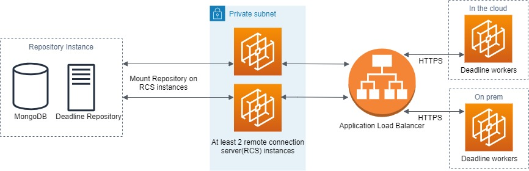
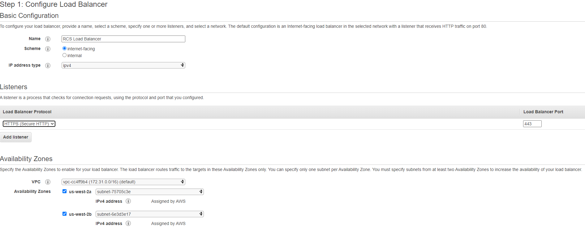
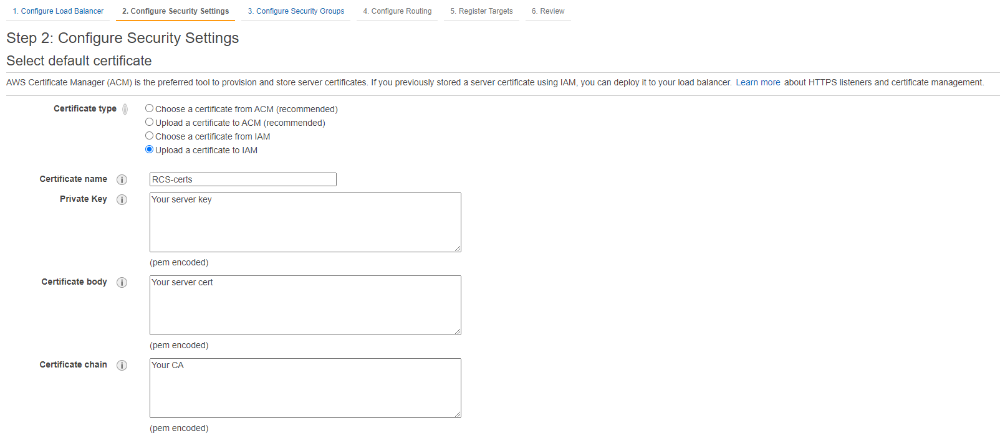
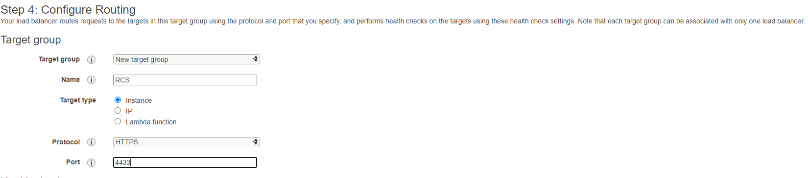
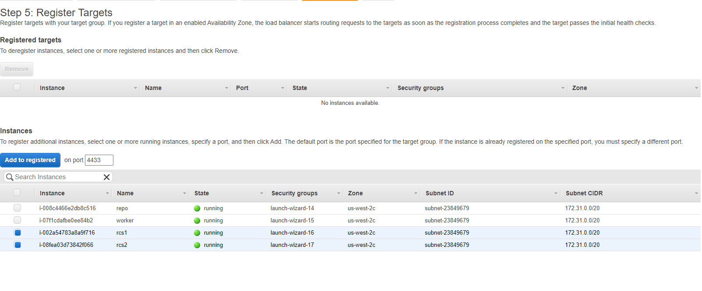

RCS Load Balancing in the Cloud¶
Overview¶
Application Load Balancer (ALB) is a highly available, automatically scalable and secure load balancer for HTTP/HTTPS request within the AWS ecosystem. In this tutorial, you will learn how to leverage the benefits of using an ALB on AWS, to build a resilient, scalable and secure render farm. You can find out more about ALB on Elastic Load Balancing.
To set up a render farm with an ALB, the Deadline Repository needs to be reachable from the Remote Connection Server (RCS) instances in the cloud. Workers can exist both in the cloud and on-premise, to utilize existing on-premise machine and spot fleet for burst work load. If you want to keep RCS on prem but want to leverage the cloud for burst work load, AWS Portal should be used instead.
Setup¶
Illustrated in the diagram above, is a render farm setup, that improves performance and redundancy, by utilizing an ALB to load balance requests from Workers to RCS. The Deadline Repository resides on its own machine and should be mounted on RCS’s file system. The communication between Workers and RCS will be encrypted for security. The number of RCS in the private subnet should be at least 2 to achieve redundancy.
Below are the steps to configure the architecture above with 2 RCSs and a single Worker. It aims to provide a starting point for building render farm with ALB:
Start an EC2 instance to serve as the repository instance (The leftmost instance in the architecture diagram above). Download the Deadline Repository installer and install it on the repository instance. Turn off client authentication via ssl/tls in the database security step.
Start two EC2 instances to serve as RCS instances. These two instances need to be launched into a private subnet. If you are unfamiliar with the concept of private subnet or VPC, you can see an example setup here.
Configure the RCS instances to access (mount) the shared repository file system. We commonly use NFS or Samba share for Linux and Samba share for Windows.
Download Deadline Client installer and install it on both RCS instances. Remember to select the RCS in the list of components, and turn off Require external Client to use TLS. We will generate our own certs in later steps to secure the RCS. Now both RCSs should be able to connect to the same repository and database.
Generate new SSL Certificates.. You will have 5 files after this step: the CA cert, client key, client cert, server key, server cert. We will used these manually generated certs to secure the communication between Workers and RCSs.
Transfer the CA cert and server cert to the RCS instances, and add/edit the following lines to the RCS’s deadline.ini.:
>>> TlsAuth=True >>> TlsListenPort=4433 >>> TlsServerCert=path/to/server/pfx >>> TlsCaCert=path/to/ca/crt >>> ClientSSLAuthentication=NotRequired
Go to your EC2 Dashboard, in the left hand menu, under the “Load Balancing” section, select the “Load Balancer” option. Click the “create load balancer” button and select Application Load Balancer.
The following diagram is a sample configuration. This load balancer will use HTTPS protocol and listen on port 443. The VPC you select under the availability zone should be the one that contains your Worker instances in the cloud.
Upload your CA, server key and server cert like in the sample setup below:
When configuring routing, select “instance” as target type, HTTPS as the protocol and use 4433 as the forwarding port number.
Finally, we can register 2 RCS instances created at step 1 as the targets of the load balancer.
Start an EC2 instance to serve as the Worker. Download Deadline Client installer and install it on the Worker instance.
Transfer the CA cert generated at step 5 to the Worker instance, and add/edit the following lines to the Worker’s deadline.ini. You can find <DNS name of the ALB> variable under the description tab of the load balancer created at step 7:
>>> ConnectionType=Remote >>> ProxyUseSSL=True >>> ProxyRoot=<DNS name of the ALB>:443 >>> ProxySSLCertificate= >>> ProxySSLCA=path/to/ca/crt >>> ProxyRoot0=<DNS name of the ALB>:443 >>> ClientSSLAuthentication=NotRequired
If you follow the steps above, you will have a basic render farm with ALB over RCSs. Many customizations can be made to this setup. For example, RCSs can be placed in an Auto Scaling Group so that failed instances will be replaced automatically; Workers can be built from an AMI so that you don’t have to configure each one individually.

{kind=link}
{kind=link}